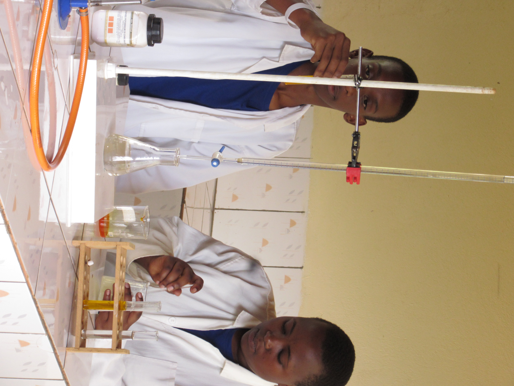

TOUR AROUND OUR SCHOOL


HEAD MASTER
We mold discipline and build a great and potential future. Provide high education standards. We aspire to produce good performing students and emphasize on technological skills. With the cooperation of the parents and very specialized and well-experienced teachers, we create a bright future for the students leading to high performance in all aspects. With proper catering and welfare situations we put our students in, we achieve more. Ensure a proper living standard for a student and putting a student in a proper living environment. We have a proper follow-up staff to coordinate a student’s daily life in every activity. Dr.Musana Alex